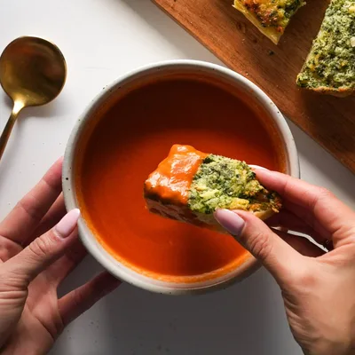
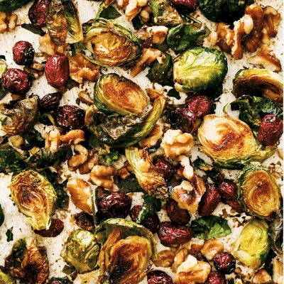

My Favorite Recipes
Chocolate Chip Cookies

Total time: 20 Minutes
Yield: 12 Cookies
Ingredients
- 8 tablespoons of salted butter
-
1/2 cup white sugar (I like to use raw cane sugar with
a coarser texture)
- 1/4 cup packed light brown sugar
- 1 teaspoon vanilla
- 1 egg
- 1 1/2 cups all purpose flour (6.75 ounces)
- 1/2 teaspoon baking soda
- 1/4 teaspoon salt (but I always add a little extra)
-
3/4 cup chocolate chips (I use a combination of chocolate
chips and chocolate chunks)
Instructions
-
Preheat the oven to 350 degrees. Microwave the butter for
about 40 seconds to just barely melt it. It shouldn’t be hot
– but it should be almost entirely in liquid form.
-
Using a stand mixer or electric beaters, beat the butter
with the sugars until creamy. Add the vanilla and the egg;
beat on low speed until just incorporated – 10-15 seconds or
so (if you beat the egg for too long, the cookies will be
stiff).
-
Add the flour, baking soda, and salt. Mix until crumbles
form. Use your hands to press the crumbles together into a
dough. It should form one large ball that is easy to handle
(right at the stage between “wet” dough and “dry” dough).
Add the chocolate chips and incorporate with your hands.
-
Roll the dough into 12 large balls (or 9 for HUGELY awesome
cookies) and place on a cookie sheet. Bake for 9-11 minutes
until the cookies look puffy and dry and just barely
golden.
-
Let them cool on the pan for a good 30 minutes or so.
Top
Tomato Soup

Total time: 50 Minutes
Yield: 4-5 Servings
Ingredients
-
two 28-ounce cans San Marzano tomatoes (whole or crushed
will work – I usually use whole tomatoes, and we use the
DeLallo brand!)
-
1 stick (8 tablespoons) salted butter
- 1 yellow onion, peel removed and cut into 4 chunks
- 3–4 cloves smashed garlic (optional)
- 1 1/2 teaspoons salt
Instructions
-
Make the Tomato Soup: Put the tomatoes, butter, and onion in
a large saucepan or Dutch oven. Bring it up to a low bubble,
then turn the heat to medium low. Cover partially with a
lid; let it simmer for 45 minutes. Stir every 15 minutes or
so to prevent scorching on the bottom.
-
Remove Onion Chunks: Remove the onion pieces using tongs.
I leave the garlic in there, but that’s up to you!
-
Blend the Tomato Soup: Using an immersion blender, blend up
the soup until it’s a smooth as you want it. Taste and
adjust; you can thin it out with milk, water, broth, cream,
whatever you want; I just leave it as-is!
-
Serve: Serve tomato soup with garlic bread, grilled cheese,
croutons, crackers, pesto, whatever you like!
Top
Brousel Sprouts

Total time: 25 Minutes
Yield: 3-4 Servings
Ingredients
-
one 12 oz. package raw brussels sprouts, halved
-
2 tablespoons olive oil
- a pinch of salt and pepper
- a handful of walnuts
- a handful of dried cranberries
- 1 teaspoon Dijon mustard
- 2 tablespoons maple syrup
-
maybe some red pepper flakes if you want to spice things up
Instructions
-
Preheat the oven to 425 degrees. Place brussels sprouts cut-side
down directly on a baking sheet. Drizzle with oil and sprinkle
with salt and pepper.
-
Remove Onion Chunks: Remove the onion pieces using tongs.
I leave the garlic in there, but that’s up to you!
-
Roast brussels sprouts for 15-20 minutes, until cut sides are
very brown and some of the leaves are crispy. Add walnuts,
mustard, and maple; return to oven for 5-10 minutes to get the
walnuts toasted.
-
Remove from oven. Toss with cranberries directly on the baking
sheet. Season and serve immediately. Yumo!
Top